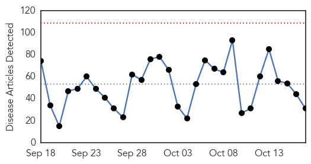
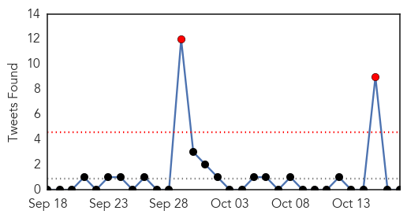

Unknown
30-Day Web Trend
0 alerts, 0 warnings

30-Day Twitter Trend
2 alerts, 0 warnings

Article Locations

Article Confidences
Top Articles:
- 0.992
- Camels in Kenya test positive for MERS virus: study - Xinhua
- 0.965
- Preparing for flu season in Williamsburg
- 0.944
- Nationwide Flu Mist Shortage Creating Obstacles Locally
- 0.917
- Chicago Tribune
- 0.917
- Chicago Tribune
- 0.917
- Chicago Tribune
- 0.917
- Chicago Tribune
- 0.917
- Chicago Tribune
- 0.917
- Chicago Tribune
- 0.917
- Chicago Tribune
- 0.917
- Chicago Tribune
- 0.917
- Chicago Tribune
- 0.866
- Japan's Abe sends ritual offering to Yasukuni Shrine ahead of trilateral summit
- 0.848
- Flu already in Ontario
- 0.831
- Typhoid Outbreak Among Palestinian Refugees
- 0.785
- norwegian star
- 0.769
- Alert issued after chemotherapy treatment for Irish cancer patients 'contaminated'
- 0.728
- Salmonella outbreak includes Alberta
- 0.702
- Kerry to meet Netanyahu in bid to calm West Bank unrest
- 0.702
- Mexican drug lord 'El Chapo' injured while eluding capture
- 0.702
- Hungary closes border with Croatia to stem migrant flow
- 0.702
- Guinea’s president re-elected in contested vote, provisional results show
- 0.702
- Guinea’s Condé wins re-election in disputed presidential vote
- 0.702
- German mayoral candidate stabbed over support for refugees
- 0.633
- Gran with cancer tells of concern over chemo 'contamination' scare
- 0.586
- Malaria eradication
- 0.583
- Teams sent to recruit doctors from 9 countries
- 0.568
- Five babies die in Free State due to haemorrhaging
- 0.567
- KBS World Radio
- 0.509
- Funding woes leave hospitals on life supportThe Nation Online
- 0.502
- Senate probe into Japanese encephalitis in Cordillera sought
Top Tweets:
-
No tweets found for Oct 17, 2015
Bubonic Plague
30-Day Web Trend
0 alerts, 0 warnings
30-Day Twitter Trend
0 alerts, 0 warnings

Article Locations

Article Confidences

Top Articles:
-
No articles found for Oct 17, 2015
Top Tweets:
-
No tweets found for Oct 17, 2015